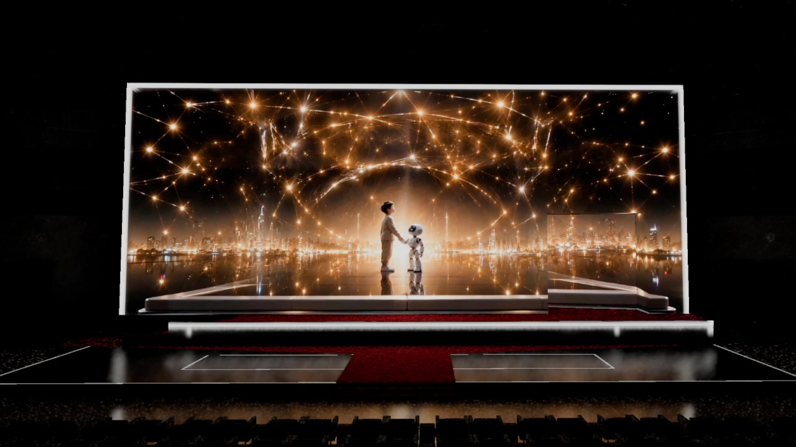
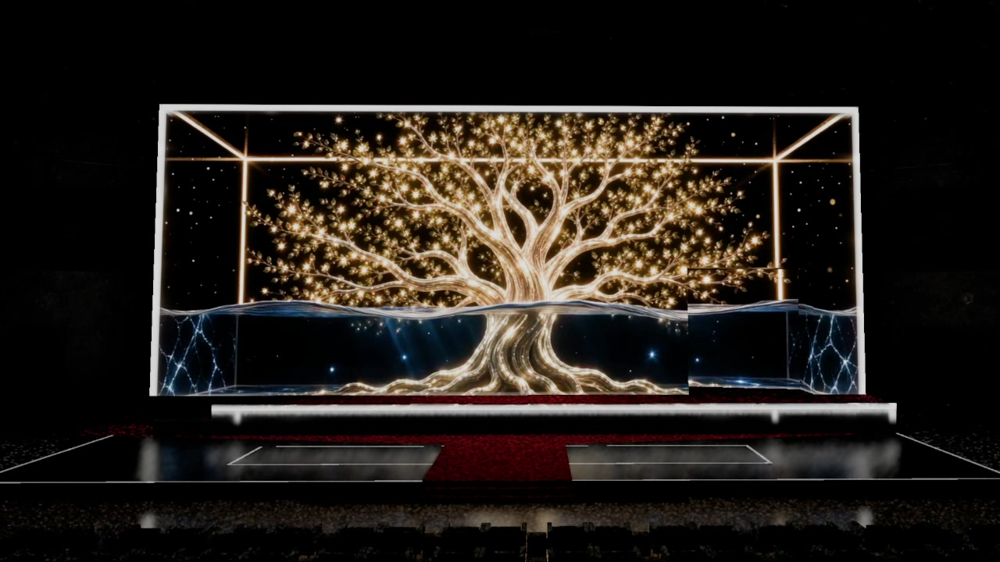

Overview / 项目简介
为大型活动开场秀制作数字影像内容，以盒体舞台为空间框架，完成透视结构、空间 Mapping 与 AI 影像段落的整合。
Experience
裸眼三维盒体舞台与空间错视
VIRTURA Role
空间结构 Mapping、数字内容制作、AI 影像整合
Workflow
概念 Demo、三维构建、舞台预演、最终输出
Selected Media / 项目图片
以下静帧截取自公开发布视频，重点呈现完整盒体、结构映射与最终空间画面。




Process / 过程
Stage first.
制作从舞台几何与观看视角出发：先锁定盒体透视和内容安全区，再把机器人、数字结构与 AI 影像放回同一套 Mapping 逻辑中完成预演与输出。
Credits / 项目署名
- Project
- 2026 中国·AI盛典“AI在一起”开场秀
- VIRTURA Role
- Spatial Mapping / 3D Content / AI Image Integration
- Public Source
- 央视公开发布视频
- Client + Production
- 待片尾或委托方确认后补充